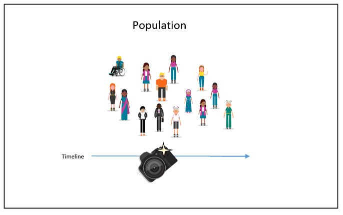
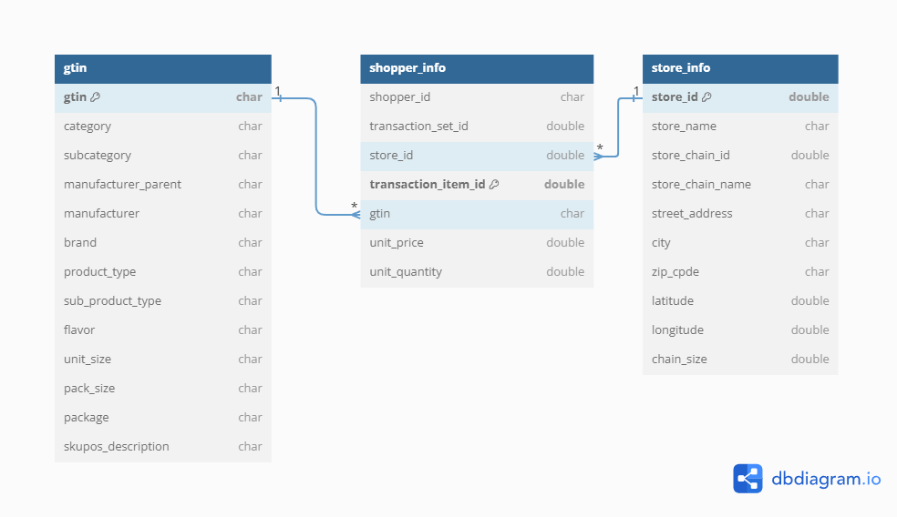
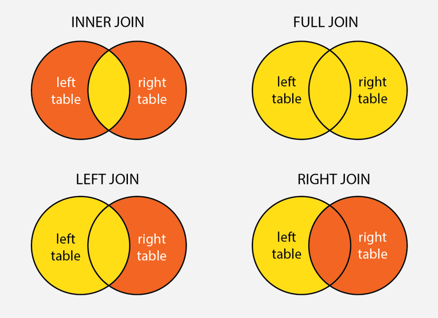

# This is the script for Lab Week 09
setwd("Replace with the path to your working directory")
getwd() # Confirm I am working in the proper directory.
# Load required libraries using pacman for convenience
# pacman will check if the package is installed, install it if not, and then load it for use
library(pacman)
p_load(dplyr,readr,tidyverse,ggplot2,modelsummary,GGally,factoextra,pandoc)Week 09 Lab: Intro to Analyzing Cross-Sectional Data

This Lab Contributes to Course Objectives: 1, 3, 4, 5, 7, 8
Learning Objectives R
- Conduct exploratory data analysis on your convenience store datasets
- Conduct basic cluster analysis using R
Download Lab Handout Here
Getting Started
Set your working directory and load necessary packages:
Data Description and Documentation
We will use the following datasets for Project 2:
shopper_info.csv: This file contains transaction-level data, including information about the shopper, the store where the purchase was made, the products purchased (identified by GTIN), and the quantities and prices.
gtin.csv: This file provides additional details about the products, which can be linked to the shopper_info.csv file using the GTIN (Global Trade Item Number) variable.
store_info.csv: This file includes information about the stores, such as location, size, and other characteristics, which can be linked to the shopper_info.csv file using the store_id variable.
This is the core file that contains information about the shopper and each transaction they made during the month of July 2023.
| Column Name | Description | Type | Example |
|---|---|---|---|
| shopper_id | A unique identifier for the shopper, used to track customer behavior or purchases without revealing personal information. | chr | 1b66d0b8c61be4cfee253597e3ccbf7f |
| transaction_set_id | A unique identifier for a group of transactions, which may represent a shopping basket or an entire shopping session. | num | 2041514888493873e21 |
| store_id | A numeric identifier representing a specific store location where the transaction took place. | num | 25585 |
| transaction_item_id | A unique numeric identifier for each item within a transaction, distinguishing different items in a single transaction. | num | 204151488849387e22 |
| gtin | Global Trade Item Number, a unique number assigned to products for identification in a retail setting. | chr | 00043300109264 |
| unit_price | The price of a single unit of the product. | num | 7.07 |
| unit_quantity | The quantity of the product units purchased in the transaction. | num | 1 |
Note
A gtin = NA or gtin = 0 means that this purchase was FUEL.
You will link this file with “shopper_info” based on the variable gtin. GTIN stands for “Global Trade Item Number” and is similar to an SKU or UPC (i.e., barcode).
| Column Name | Description | Type | Example |
|---|---|---|---|
| gtin | Global Trade Item Number, a unique identifier for products used to look up item information in a database. | chr | 06937643571427 |
| category | The general classification of the product, indicating the broad market segment to which it belongs. | chr | Other Tobacco Products |
| subcategory | A more specific classification within the general category, detailing the type of product. | chr | Vaping Products |
| manufacturer_name | The company that manufactures or produces the product. | chr | Mi-One Brands |
| brand | The brand name under which the product is marketed and sold. | chr | Elf Bar |
| product_type | The form or variety of the product, indicating if it is a singular item, bundle, service, etc. | chr | Disposable |
| sub_product_type | A further division within the product type, providing additional specificity. | chr | Rechargeable |
| flavor | The designated taste profile or flavoring of the product. | chr | Watermelon Cherry |
| unit_size | The amount or quantity of use a product provides, often referring to consumable products. | chr | 5000 Puffs |
| pack_size | The number of individual items within a single packaged product. | chr | Single |
| package | The type of packaging used for the product. | chr | NA |
| skupos_description | A descriptive line combining several product attributes for inventory and sales purposes, typically used in POS (Point of Sale) systems. | chr | LOST MARY MO5000 WATERMELON CHERRY |
This file contains the store details and can be linked with the “shopper_info” using the variable store_id.
| Column Name | Description | Type | Example |
|---|---|---|---|
| store_id | A numeric identifier assigned to a store for internal tracking and database management. | num | 31056 |
| store_name | The name of the store as it is known publicly and used for branding. | chr | Kwik Stop |
| store_chain_id | A unique numeric identifier assigned to the store chain for internal tracking and differentiation from other chains. | num | 16665 |
| store_chain_name | The name of the store chain to which the store belongs, used for branding and corporate identity. | chr | Kwik Stop |
| street_address | The street location of the store, used for mail and geographical identification. | chr | 1118 W Main St |
| city | The city in which the store is located. | chr | Olney |
| zip_code | The postal code for the area where the store is located, used for mail delivery and geographical segmentation. | chr | 76374 |
| latitude | The geographical coordinate that specifies the north-south position of the store on the Earth’s surface. | num | 33.3712 |
| longitude | The geographical coordinate that specifies the east-west position of the store on the Earth’s surface. | num | -98.7681 |
| chain_size | A numeric value representing the number of stores in the chain, which could indicate the size of the store network within the corporation. | num | 1 |

Example: Customer Segmentation
Goal for the exercises in this lab:
Suppose you manage convenience stores and want to segment your customers based on purchasing behavior.
Suppose you manage convenience stores and want to segment your customers based on purchasing behavior.

Clusters will reveal insights about the types of shoppers, i.e., customer segments.
We will use the convenience store sales data to divide your customers into groups to better tailor marketing strategies for each customer segment.
Exploratory Data Analysis (EDA)
Our goal in this section is to become familiar with each dataset, understand the distributions, check for missing values, and identify any outliers.
Step 1: Load Your Datasets
# Read in the shopper_info dataset
# This dataset contains detailed information on shoppers and their transactions for July 2023
shopper_info <- read_csv("https://csu-arec-330.github.io/materials/unit_02/inputs/shopper_info.csv")
# Read in the GTIN dataset
# This file links products to their Global Trade Item Numbers, akin to SKUs or UPCs
gtin <- read_csv("https://csu-arec-330.github.io/materials/unit_02/inputs/gtin.csv")
# Read in the store_info dataset
# Contains details about each store, linkable to shopper_info via store_id
store_info <- read_csv("https://csu-arec-330.github.io/materials/unit_02/inputs/store_info.csv")Inspect datasets:
head(shopper_info)
head(gtin)
head(store_info)Do they contain all the variables that are in the data dictionary?
Step 2: Join the Data
In R, particularly within the dplyr package, join functions are used to merge two data frames by one or more common key variables. Each type of join function serves a different purpose, allowing for various ways of combining data based on the presence or absence of matching key values in the two data frames. Here’s an overview of the different types of join functions provided by dplyr, along with examples for each.
 :::{.callout-note title=“Check Your Understanding”} Where have you used joins before? Was it in R or Tableau? :::
- Inner Join
The inner_join() function merges rows from two data frames where there are matching values in the specified key columns. It returns only the rows with matching keys in both data frames.
Example:
# Join shopper_info and store_info by the common key "store_id"
shopper_store_inner <- inner_join(shopper_info, store_info, by = "store_id")- Left Join
The left_join() function returns all rows from the left data frame, along with matching rows from the right data frame. If there’s no match, the result will contain NA for the missing values from the right data frame.
Example:
# Keeping all rows from shopper_info and adding information from store_info where possible
shopper_store_left <- left_join(shopper_info, store_info, by = "store_id")- Right Join
Conversely, right_join() returns all rows from the right data frame, along with matching rows from the left data frame. Rows in the right data frame with no match in the left data frame will have NA for the missing values from the left data frame.
Example:
# Keeping all rows from store_info and adding information from shopper_info where possible
store_shopper_right <- right_join(shopper_info, store_info, by = "store_id")- Full Join
The full_join() function combines all rows from both data frames, inserting NA for missing matches on either side.
Example:
# Combining all information from both shopper_info and store_info
shopper_store_full <- full_join(shopper_info, store_info, by = "store_id")Other types of joins that we will not cover include semi_join() and anti_join().
You Do It
- Join the shopper_info data frame with the store_info data frame so that you keep all transaction information, even if there is no store match.
What join function should you use? How many observations do you expect to retain?
Code
shopper_store_left <- left_join(shopper_info, store_info, by = "store_id")How many observations should you have? In other words, what are the dimensions of your joined data frame?
Code
total_observations <- nrow(shopper_store_left)
print(total_observations)- Next, join the gtin data frame with the new data frame you created in the previous step so you keep all transaction information, even if there is no gtin match.
What join function should you use? How many observations do you expect to retain?
Code
shopper_store_gtin_left <- left_join(shopper_store_left, gtin, by = "gtin")How many observations should you have? In other words, what are the dimensions of your joined data frame?
Code
total_observations <- nrow(shopper_store_gtin_left)
print(total_observations)How many distinct shoppers appear in the sales data for having made a transaction in July 2023?
Code
length(unique(shopper_store_gtin_left$shopper_id))Write the data frame to a csv file called shopper_store_gtin_left.csv.
Code
write_csv(shopper_store_gtin_left, "shopper_store_gtin_left.csv")
Note
Depending on your research question (customers, stores, or products) for project 2, you may have to merge two or three datasets.
Step 3: Data Cleaning and Transformation
Next, recall our objective: We will use the convenience store sales data to divide your customers into groups to better tailor marketing strategies for each customer segment.
In this step, we must manipulate our joined data frame shopper_store_gtin_left so we can perform our cluster analysis.
Let’s build a dataset with the following variables:
- Total spent per visit
- Average number of items per basket
- Frequency of visits to stores
Make sure to document clearly any data cleaning decisions (e.g., removing outliers, transforming variables). Provide justification for your decisions.
Clean raw data and remove outliers
# Clean and transform the raw data
clean_data <- shopper_store_gtin_left %>%
# Remove observations with negative or zero unit price (e.g., returns or invalid entries)
filter(unit_price > 0) %>%
# Drop observations with missing or invalid GTINs (e.g., fuel purchases or non-product transactions)
filter(!is.na(gtin), gtin != 0) %>%
# Calculate total spending per line item
mutate(total = unit_price * unit_quantity) %>%
# Arrange data to ensure proper ordering of transactions
arrange(shopper_id, store_id, transaction_set_id) %>%
# Drop remaining rows with NA values across key variable. This will drop any observation where at least one value is missing. I recommend removing this line for most analyses
drop_na()Create a visit summary data frame
# Create visit-level summaries (per shopper-store-visit)
visit_summary <- clean_data %>%
group_by(shopper_id, store_id, transaction_set_id) %>%
summarize(
total_spent = sum(total, na.rm = TRUE), # Total spending per visit
avg_items = mean(unit_quantity, na.rm = TRUE), # Average items per basket (per GTIN)
.groups = "drop"
) %>%
# Optional: Remove extreme outliers in total_spent (e.g., top 0.1%) to avoid skewing summaries
filter(total_spent < quantile(total_spent, 0.999))Create a visit frequency data frame
# Create shopper-level summary of store visit frequency
visit_frequency <- clean_data %>%
distinct(shopper_id, store_id, transaction_set_id) %>%
group_by(shopper_id, store_id) %>%
summarize(
num_visits = n(), # Frequency of visits to each store
.groups = "drop"
)Join and inspect the data frames
# Final dataset: merge summaries if desired
final_dataset <- visit_summary %>%
left_join(visit_frequency, by = c("shopper_id", "store_id")) %>%
left_join(store_info, by = "store_id") %>%
arrange(shopper_id, store_id)
length(unique(shopper_store_gtin_left$shopper_id))
length(unique(final_dataset$shopper_id))
View(final_dataset) Why did I include
length(unique(shopper_store_gtin_left$shopper_id))andlength(unique(final_dataset$shopper_id))in the R script? Do they reveal the same number of shoppers? Why or why not?
Step 4: Summary Statistics and Data Cleaning
Consider it a best practice to run your summary statistics before and after you clean your data. Today, we will just run our summary statistics on the cleaned dataset.
The package modelsummary provides some handy utilities for easily generating summary statistics. We will use datasummary_skim() to get a quick overview of the data.
First, we will look at the numeric data by specifying type="numeric". Then do the same for categorical data by specifying type="categorical".
# Using our dataframe 'final_dataset'
datasummary_skim(final_dataset, type = "numeric")
datasummary_skim(final_dataset, type = "categorical")Evaluate your summary statistics.
- What do you notice?
- Do you see unusual values or missing data?
Output Select Summary Statistics to Word Doc
You can customize this summary statistics table and output the result to a docx file using the datasummary() function (see the other options in the documentation).
In the following example, create a table with unit_price, unit_quantity, chain_size as the rows and Mean, SD, Min, and Max as the columns. The character string as the output argument defines the file name in the current working directory.
datasummary(total_spent + avg_items + num_visits ~ Mean + SD + Min + Max,
data=final_dataset,
output = "sumstats.docx")Step 5: ggpairs() Visualizations
The package GGally provides helpful EDA visualizations using ggplot2. Use ggpairs to visualize density plots and scatter plots to better understand correlation. What do you notice?
# Example: choose numeric variables relevant to your research question
# These will be `total_spent`, `avg_items`, and `num_visits`
final_dataset %>%
select(total_spent, avg_items, num_visits) %>%
ggpairs()Cluster Analysis
Step 1: Select Variables for Clustering
Choose variables relevant for an initial cluster analysis. In our example, we choose the variables that we want to use for grouping customers, chosing variables that reflect meaningful differences in behaviors or characteristics.
# Select the numeric variables to use for clustering:
# - total_spent: how much each shopper spends
# - avg_items: average number of items per visit
# - num_visits: how often each shopper visits
cluster_data <- final_dataset %>%
select(total_spent, avg_items, num_visits) Step 2: Scale the Data
Variables like spending and visit frequency are on different scales. Scaling puts them on the same scale so they are in comparable units and one doesn’t overpower the others in clustering.
# Standardize (scale) the selected variables
# This gives each variable a mean of 0 and a standard deviation of 1
# Helps make clustering results more balanced and fair
cluster_scaled <- scale(cluster_data)Step 3: Evaluate Number of Clusters (k)
In this step, we will use two methods to help us determine the optimal number of clusters.
- Method 1: the silhouette plot1
- This method checks how well each item fits in its group.
- It gives a score from -1 to 1.
- Closer to 1 = items are in the “right” group
- Closer to 0 or negative = not a good fit
- Try different numbers of clusters and pick the one with the highest score.
- Method 2: the elbow plot.
- This method helps you decide how many clusters to use by looking at how much error decreases as you add more clusters.
- It calculates the “within sum of squares” (WSS) for different numbers of clusters.
- The plot shows how much error goes down as you add more clusters.
- At first, adding more clusters improves the fit a lot.
- But at some point, adding more doesn’t help much—that’s the “elbow” of the curve.
- Pick the number of clusters where the curve bends. That’s usually a good choice.
fviz_nbclust(cluster_scaled, kmeans, method = "silhouette")
fviz_nbclust(cluster_scaled, kmeans, method = "wss")Step 4: Perform K-means Clustering
We will use the function kmeans() for the cluster analysis. The kmeans algorithm needs you to specify the number of clusters. Your analysis in the previous step will provide you with an optimal number of clusters.
Perform clustering, starting with an initial choice (e.g., k = 3):
# Set a random seed so results are reproducible (you get the same results each time)
set.seed(123)
# Run k-means clustering on the scaled data
kmeans_fit <- kmeans(cluster_scaled,
centers = 3, #the number of clusters
nstart = 25) #the number of random startsStep 5: Examine and Interpret Clusters
Assign the clusters back to the main data frame and interpret your results:
# Add the cluster assignments from the k-means model to the clean_data dataframe
# Each row (i.e., transaction) now gets a new column called 'cluster' indicating which group it belongs to
final_clusters <- final_dataset %>%
mutate(cluster = kmeans_fit$cluster)Explore cluster differences:
# Group the data by cluster and calculate the average values for each cluster
# This helps you compare spending, basket size, and visit frequency across clusters
final_clusters %>%
group_by(cluster) %>%
summarize(across(c(total_spent, avg_items, num_visits), mean))
View(final_clusters)Step 6: Learn about Your Clusters
Finally, let’s learn more about our clusters. Notice that we will have to use our knowledge of joins, filters, group_by, and summarize to create a data frame called most_frequent_purchase that identifies the most frequently purchased item, by cluster, within the month.
# Join cluster labels to shopper_info (keeping only cluster info)
most_frequent_purchase <- shopper_info %>%
# Join cluster info only
left_join(final_clusters %>% select(shopper_id, store_id, transaction_set_id, cluster),
by = c("shopper_id", "store_id", "transaction_set_id")) %>%
# Filter out rows with missing/invalid gtin or missing cluster
filter(!is.na(gtin), gtin != 0, !is.na(cluster)) %>%
# Join in product info
left_join(gtin, by = "gtin") %>%
# Count purchases by cluster and subcategory
group_by(cluster, gtin, subcategory) %>%
filter(!is.na(subcategory)) %>%
summarize(purchase_count = n(), .groups = "drop") %>%
# Get the top subcategory in each cluster
group_by(cluster) %>%
filter(purchase_count == max(purchase_count)) %>%
ungroup() %>%
select(-gtin)
View(most_frequent_purchase)This lab provides foundational skills in EDA and clustering, directly setting you up for your Project 2 analysis.
Lab Script for Week 9: Intro to Analyzing Cross-Sectional Data
# This is the script for Lab Week 09
setwd("Set your working directory here")
getwd() # Confirm I am working in the proper directory.
# Load required libraries using pacman for convenience
# pacman will check if the package is installed, install it if not, and then load it for use
library(pacman)
p_load(dplyr,readr,tidyverse,ggplot2,modelsummary,GGally,factoextra,pandoc)
# =======================================================
# READ IN DATA
# =======================================================
# Read in the shopper_info dataset
# This dataset contains detailed information on shoppers and their transactions for July 2023
shopper_info <- read_csv("https://csu-arec-330.github.io/materials/unit_02/inputs/shopper_info.csv")
# Read in the GTIN dataset
# This file links products to their Global Trade Item Numbers, akin to SKUs or UPCs
gtin <- read_csv("https://csu-arec-330.github.io/materials/unit_02/inputs/gtin.csv")
# Read in the store_info dataset
# Contains details about each store, linkable to shopper_info via store_id
store_info <- read_csv("https://csu-arec-330.github.io/materials/unit_02/inputs/store_info.csv")
head(shopper_info)
head(gtin)
head(store_info)
# =======================================================
# JOINS
# =======================================================
# Join shopper_info and store_info by the common key "store_id"
shopper_store_inner <- inner_join(shopper_info, store_info, by = "store_id")
# Keeping all rows from shopper_info and adding information from store_info where possible
shopper_store_left <- left_join(shopper_info, store_info, by = "store_id")
# Keeping all rows from store_info and adding information from shopper_info where possible
store_shopper_right <- right_join(shopper_info, store_info, by = "store_id")
# Combining all information from both shopper_info and store_info
shopper_store_full <- full_join(shopper_info, store_info, by = "store_id")
# =======================================================
# YOU DO IT
# =======================================================
shopper_store_left <- left_join(shopper_info, store_info, by = "store_id")
total_observations <- nrow(shopper_store_left)
print(total_observations)
shopper_store_gtin_left <- left_join(shopper_store_left, gtin, by = "gtin")
total_observations <- nrow(shopper_store_gtin_left)
print(total_observations)
length(unique(shopper_store_gtin_left$shopper_id))
write_csv(shopper_store_gtin_left, "shopper_store_gtin_left.csv")
# =======================================================
# CLEAN DATA
# =======================================================
# Clean and transform the raw data
clean_data <- shopper_store_gtin_left %>%
# Remove observations with negative or zero unit price (e.g., returns or invalid entries)
filter(unit_price > 0) %>%
# Drop observations with missing or invalid GTINs (e.g., fuel purchases or non-product transactions)
filter(!is.na(gtin), gtin != 0) %>%
# Calculate total spending per line item
mutate(total = unit_price * unit_quantity) %>%
# Log-transform chain size to reduce skewness and interpret relative differences
mutate(log_chain_size = log(chain_size + 1)) %>%
# Arrange data to ensure proper ordering of transactions
arrange(shopper_id, store_id, transaction_set_id) %>%
# Drop remaining rows with NA values across key variables
drop_na()
# Create visit-level summaries (per shopper-store-visit)
visit_summary <- clean_data %>%
group_by(shopper_id, store_id, transaction_set_id) %>%
summarize(
total_spent = sum(total, na.rm = TRUE), # Total spending per visit
avg_items = mean(unit_quantity, na.rm = TRUE), # Average items per basket (per GTIN)
.groups = "drop"
) %>%
# Optional: Remove extreme outliers in total_spent (e.g., top 0.1%) to avoid skewing summaries
filter(total_spent < quantile(total_spent, 0.999))
# Create shopper-level summary of store visit frequency
visit_frequency <- clean_data %>%
distinct(shopper_id, store_id, transaction_set_id) %>%
group_by(shopper_id, store_id) %>%
summarize(
num_visits = n(), # Frequency of visits to each store
.groups = "drop"
)
# Final dataset: merge summaries if desired
final_dataset <- visit_summary %>%
left_join(visit_frequency, by = c("shopper_id", "store_id")) %>%
left_join(store_info, by = "store_id") %>%
arrange(shopper_id, store_id)
length(unique(shopper_store_gtin_left$shopper_id))
length(unique(final_dataset$shopper_id))
View(final_dataset)
# =======================================================
# SUMMARY STATISTICS
# =======================================================
# Using our dataframe 'final_dataset'
datasummary_skim(final_dataset, type = "numeric")
datasummary_skim(final_dataset, type = "categorical")
datasummary(total_spent + avg_items + num_visits ~ Mean + SD + Min + Max,
data=final_dataset,
output = "sumstats.docx")
# =======================================================
# GGPLOT
# =======================================================
# Example: choose numeric variables relevant to your research question
# These will be `total_spent`, `avg_items`, and `num_visits`
final_dataset %>%
select(total_spent, avg_items, num_visits) %>%
ggpairs()
# =======================================================
# CLUSTER ANALYSIS
# =======================================================
cluster_data <- final_dataset %>%
select(total_spent, avg_items, num_visits)
cluster_scaled <- scale(cluster_data)
# Silhouette method
fviz_nbclust(cluster_scaled, kmeans, method = "silhouette")
# Elbow method
fviz_nbclust(cluster_scaled, kmeans, method = "wss")
# K-means clustering
set.seed(123)
kmeans_fit <- kmeans(cluster_scaled, centers = 3, nstart = 25)
final_clusters <- final_dataset %>%
mutate(cluster = kmeans_fit$cluster)
final_clusters %>%
group_by(cluster) %>%
summarize(across(c(total_spent, avg_items, num_visits), mean))
View(final_clusters)
# =======================================================
# WHAT DO YOUR CLUSTERS REVEAL?
# =======================================================
# Join cluster labels to shopper_info (keeping only cluster info)
most_frequent_purchase <- shopper_info %>%
# Join cluster info only
left_join(final_clusters %>% select(shopper_id, store_id, transaction_set_id, cluster),
by = c("shopper_id", "store_id", "transaction_set_id")) %>%
# Filter out rows with missing/invalid gtin or missing cluster
filter(!is.na(gtin), gtin != 0, !is.na(cluster)) %>%
# Join in product info
left_join(gtin, by = "gtin") %>%
# Count purchases by cluster and subcategory
group_by(cluster, gtin, subcategory) %>%
filter(!is.na(subcategory)) %>%
summarize(purchase_count = n(), .groups = "drop") %>%
# Get the top subcategory in each cluster
group_by(cluster) %>%
filter(purchase_count == max(purchase_count)) %>%
ungroup() %>%
select(-gtin)
View(most_frequent_purchase)